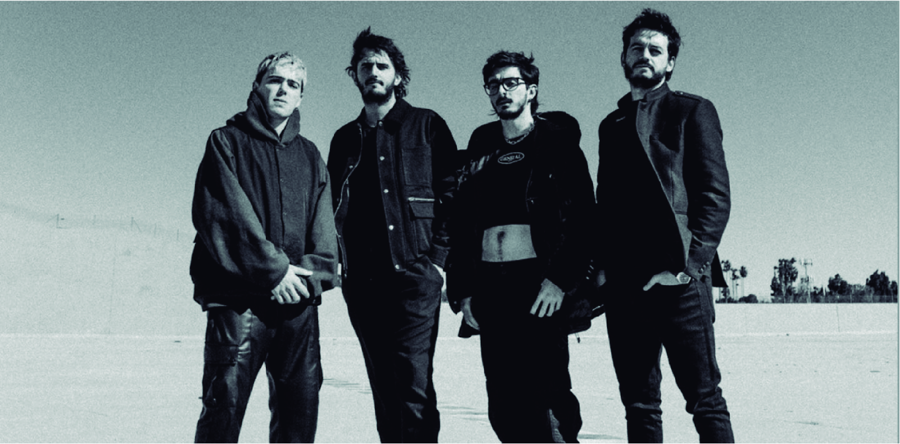
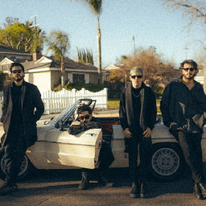
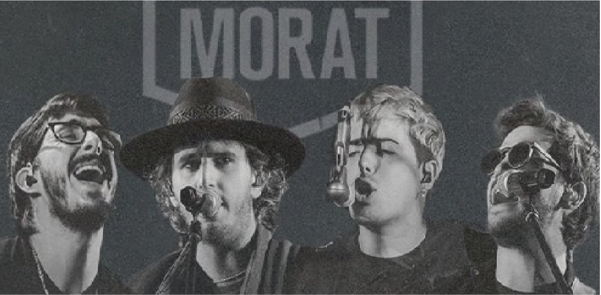

Este es un espacio en donde te puedes enterar de las noticias mas recientes sobre esta banda y sus proyectos musicales
Morat: la banda colombiana que está desatando furor en la juventud
Su música es una curita para el corazón

Significado del nombre de la Banda

Antes de ser una banda de renombre mundial,Morat se llamaba Malta. Pero cuando fueron a registrar el nombre para firmar un contrato musical con Universal Music se encontraron con que Malta ya estaba registrado y pertenencia a un banda brasileña. Fue entonces cuando se cambiaron el nombre a Morat.
Pero ¿por qué Morat? Los chicos escogieron este nombre en honor a La Morat, la finca a las afueras de Bogotá donde solían ensayar antes de alcanzar la fama, perteneciente a un familiar de Alejandro Posada Carrasco, exbateria del grupo.
¿Quiénes conforman la banda?
Ritmo que tocan

Morat está compuesto por cuatro amigos de la infancia:Juan Pablo Isaza (vocalista principal y guitarrista), Juan Pablo Villamil (vocalista principal y banjo),Simon Vargas (vocalista y bajista ) y Martín Vargas (vocalista y batería), los dos primeros tocayos y los dos últimos hermanos.
Los chicos buscaron distinguirse a través de los sonidos de sus instrumentos, y el banjo se convirtió en el mejor aliado de la banda, además de la mandolina y la guitarra de 12 cuerdas. Y es que no querían ser un grupo de one hit wonder, ellos querían marcar la diferencia y asentarse como banda referente del pop en español.

Música


Álbumes


Conciertos

A continuación se hace la respectiva presentación de los conciertos que la banda va ha realizar por algunos paises.
Estadios
| Cuidad - País | Fecha | Lugar |
| Bogota, Colombia | Julio 6 - 2024 | Estadio el Campin |
| Bogota, Colombia | Julio 7 - 2024 | Estadio el Campin |
| Medellín, Colombia | Julio 13 - 2024 | Estadio Atanasio Girardot |
| Quito, Ecuador | Julio 20 - 2024 | Estadio Atahualpa |
| Guayaquil, Ecuador | Julio 27 - 2024 | Estadio Modelo |